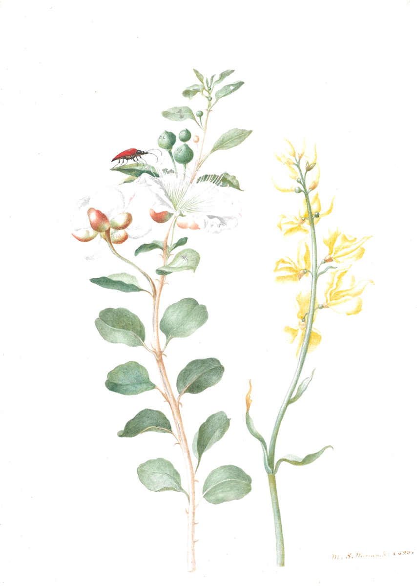
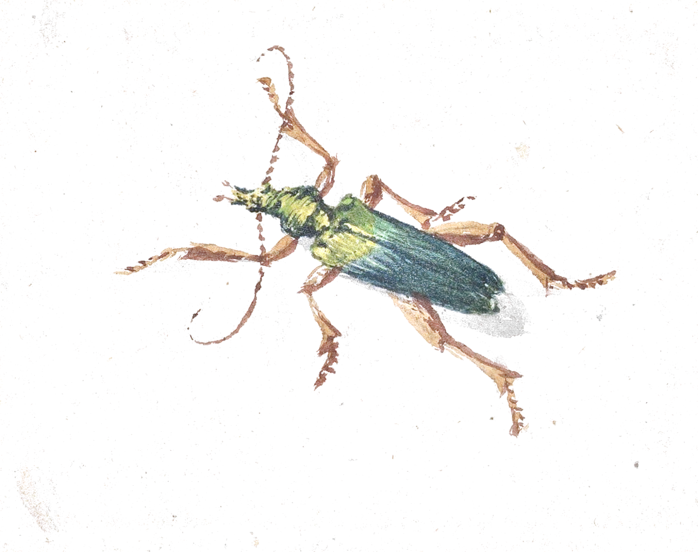
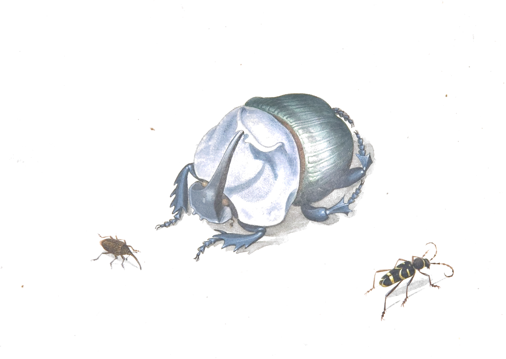

Plate I · Albretsen AS · Norway
Specimens kept, and still growing



1
2
3
4
1 · Live
Noctua epistolaris
MCP Emails
2 · Live
Cerambyx lusor
Fun Libs
3 · Building
Lucanus instrumentarius
Toolrails
4 · Paused
Scarabaeus custos
Harbor